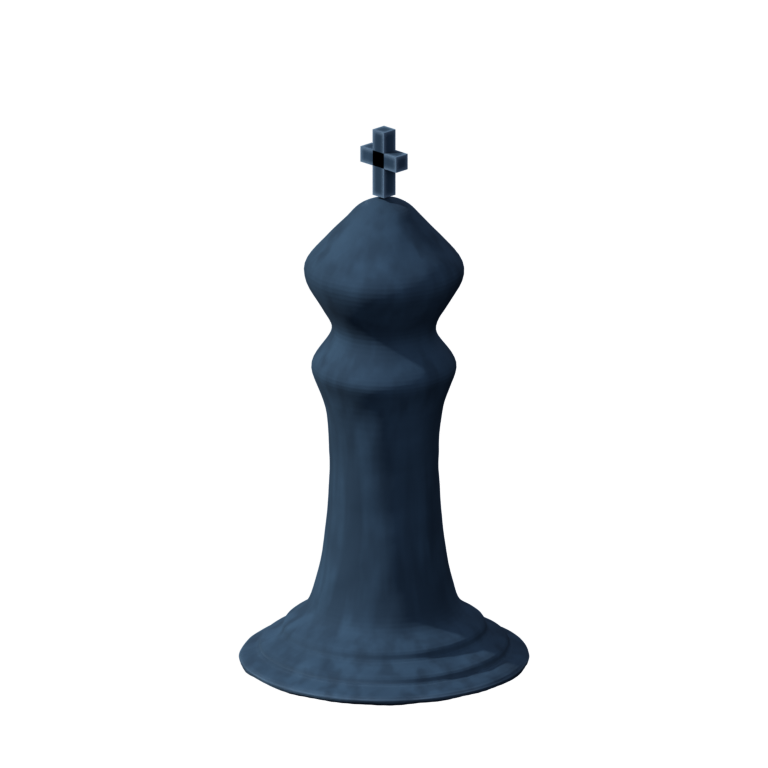
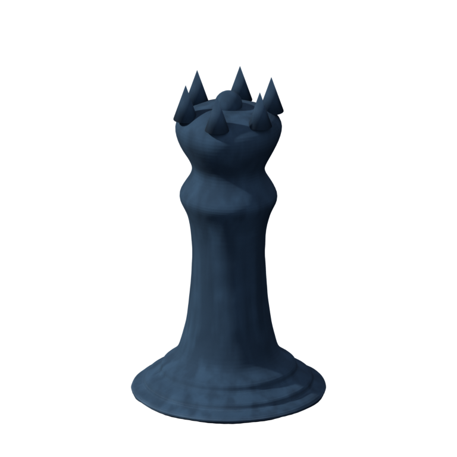
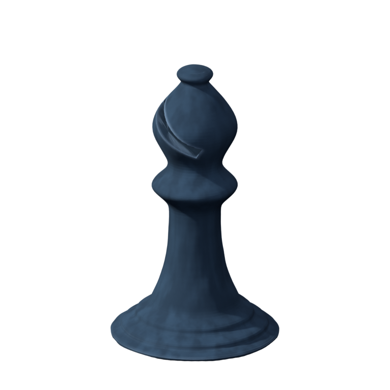
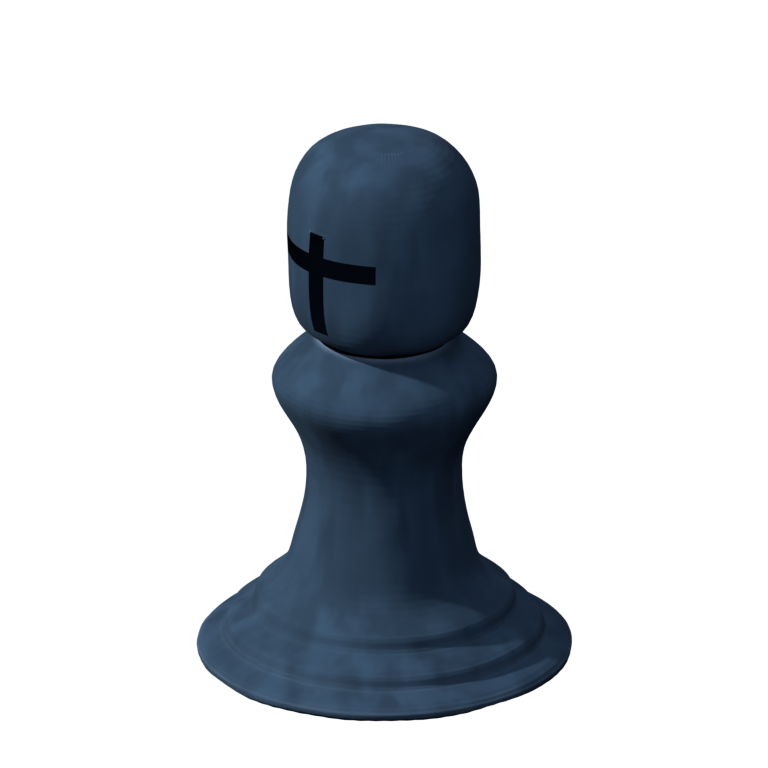

A local view of the Blender work: rook candidate units, the rook version history, and the first-pass turned pieces.
Seven tentative rooks, each its own standalone unit. Not wired into the game — candidates for review.
Open the 7 rook units →How the rook evolved, v1 → v7, with an editable .blend behind each.
Open the v1→v7 gallery →Turned pieces in the same navy carved-stone (knight still pending the armored horse import).



